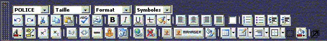
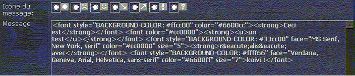

Editeur wisiwig Koivi
Xoops Koivi est un éditeur wysiwyg. Wysiwyg est tiré de l’anglais
What You See Is What You Get, facile non ? En français pour les anglophobes,
ce que vous voyez (à l'écran), est ce que vous obtenez (sur la
page), simple non ?
En plus clair, cet éditeur permet de faire du html sans rien maîtriser
de ce langage de programmation.
Comment çà marche
Dans pratiquement n’importe quel traitement de texte si vous voulez
mettre un texte en gras, ou le souligner, il vous suffit de cliquer sur l’icône
correspondante et le tour est joué. Sous xoops (sans koivi) nous avons
le même principe à la différence près que dans l’éditeur
de xoops les fonctionnalités de ce type sont plus que réduites.
Voici une copie d’écran
de l’éditeur de base de xoops

Et voici une copie d’écran de l’éditeur koivi installé avec xoops

Tout de suite, on peut s’apercevoir que koivi offre beaucoup de possibilités
en plus que l’éditeur par défaut de xoops ;).
Pour nous assurer que ce soit bien clair pour tout le monde, voyons un exemple
concret :
Voici une ligne de texte que j’ai réalisé avec koivi, en
cliquant sur les icônes comme vous l’auriez fait avec n’importe
quel traitement de texte :

Et voici le résultat obtenu lorsque l’on demande a koivi de passer en mode HTML :

Pour résumer, Koivi offre donc des possibilités d’édition plus évoluées que l’éditeur par défaut de xoops et permet notamment de basculer entre le mode wysiwyg et html ce qui fait de cet éditeur un système complet et performant. De plus, cet éditeur, contrairement à beaucoup d’autres (presque tous d’ailleurs), est compatible avec la plupart des navigateurs Internet comme Internet Explorer, Mozilla Firefox, Netscape etc...
Installation de Koivi dans Xoops
Bon, puisque l’on sait maintenant à quoi sert le wysiwyg et que je suis sur que vous mourrez tous d’envie de l’installer, voyons comment incorporer cet éditeur dans notre xoops favori.
Tout d’abord parlons de Newbb2, la nouvelle mouture du forum de xoops.
Newbb2 est prévu pour fonctionner avec koivi (et même d’autres éditeurs
d’ailleurs) cependant, koivi n’est pas installé par défaut
lorsque vous installez votre module newbb2. Il est donc nécessaire de
commencer par télécharger Koivi
sur le site des développeurs puis de décompressez le fichier
obtenu.
Ensuite il vous suffit d’uploader le répertoire wysiwyg dans le
répertoire class de xoops et le fichier system_imagemanager.html dans
modules/system/templates/
Pour avoir une interface en français il vous faut récupérer
les fichiers de traduction en français puis
de copier ces fichiers dans le répertoire class/wysiwyg/language/french/
Voila, pour l’installation, simple non ?
Koivi et Newbb2
Maintenant, Koivi fonctionne pour newbb2 car comme je le disais quelques lignes plus haut, Newbb2 est prévu pour fonctionner avec koivi, donc si vous avez fait correctement les étapes précédentes, vous devriez pouvoir vous servir de koivi lors d’une réponse dans le forum newbb2 à condition d'aller dans les préférences du module newbb2 et de sélectionner Koivi dans les options de formulaire.
Comment mettre koivi sur un autre module ?
Seulement, pour le moment, newbb2 est le seul module ayant été prévu pour fonctionner avec koivi, pour les autres modules comme « les news » ou même les commentaires, il vous faudra mettre les mains dans le code... mais rassurez vous, c’est très simple ;).Nous allons voir ici comment implémenter koivi dans un autre module. Prenons par exemple la dernière version du module news (1.2.1).
Récupérez le fichier storyform.inc.php qui se trouve dans le répertoire
/modules/news/include/. (Pour information, à chaque fois que vous voulez
adapter un module de la sorte, il faudra passer par le répertoire include
du module pour récupérer ce type de fichier)
Donc, dans notre fichier storyform.inc.php, recherchez la ligne :
include_once XOOPS_ROOT_PATH."/class/xoopsformloader.php";
et ajouter la ligne suivante juste en dessous :
include_once XOOPS_ROOT_PATH."/class/wysiwyg/formwysiwygtextarea.php";
ensuite, recherchez la ligne suivante et supprimez la ou mettez la en commentaire :
//$sform->addElement(new XoopsFormDhtmlTextArea(_NW_THESCOOP, 'hometext', $hometext, 15, 60, 'hometext_hidden'), true);
et remplacez ou ajoutez la ligne suivante juste en dessous :
$sform->addElement(new XoopsFormWysiwygTextArea( _NW_THESCOOP, 'hometext', $hometext, '100%', '400px',''), true);
ensuite, recherchez la ligne suivante et supprimez la ou mettez la en commentaire :
//$sform->addElement(new XoopsFormDhtmlTextArea(_AM_EXTEXT, 'bodytext', $bodytext, 15, 60, 'bodytext_hidden'), false);
et remplacez ou ajoutez la ligne suivante juste en dessous :
$sform->addElement(new XoopsFormWysiwygTextArea( _AM_EXTEXT, 'bodytext', $bodytext, '100%', '400px',''), true);
Voilà, le module news est prêt à utiliser koivi, ce n’était pas bien compliqué ; pour ceux qui voudraient passer cette étape, voici le module news 1.2.1 avec l’adaptation koivi deja réalisée.
Conclusion
Pour allez un peu plus loin et pour résumer, on constate que les points vraiment importants pour adapter un module avec koivi sont les suivants :
- rechercher le fichier à modifier (toujours dans le répertoire include du module et de la forme ***.inc.php)
- ajouter la ligne include_once XOOPS_ROOT_PATH."/class/xoopsformloader.php"; pour pouvoir utiliser la variable
- chercher la $sform contenant XoopsFormDhtmlTextArea et adapter la ligne en fonction de qui a été dit plus haut. (Pour chaque zone d’édition de texte)
Voila, je pense qu’avec tout ça vous êtes parés pour utiliser koivi sans modération.
Assniok